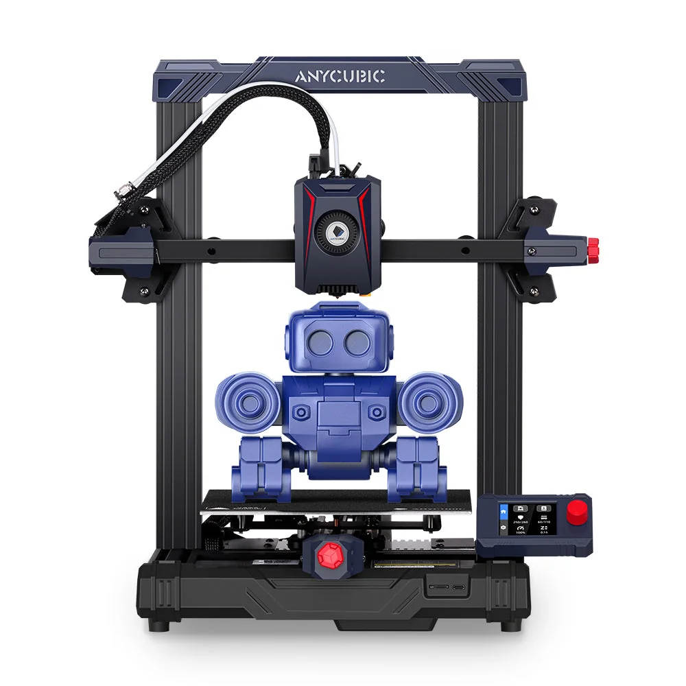

Build volume
250 x 220 x 220 mm stated HWD, i.e. 220 x 220 x 250 mm; 12.1 L
Advertised dimensions; check usable space and variants.
Cheapest Kobra 2 with a knob-driven 2.4-inch screen and a 250 mm/s ceiling, running Marlin with input shaping.

250 x 220 x 220 mm stated HWD, i.e. 220 x 220 x 250 mm; 12.1 L
Advertised dimensions; check usable space and variants.
260 C nozzle temperature ceiling; 0.4 mm replaceable nozzle
Published limits; hardware and firmware limits may differ.
$249.00 on store.anycubic.com, Aug 2026 - higher than the better-specified Kobra 2 at $169 on the same day, which is a listing quirk rather than a positioning statement
Dated listing, not a live offer. Read the configuration and region.
Every recorded value stays with its conditions and original sources. Manufacturer claims and independent measurements are kept distinct.
Dimensions, construction and the hardware that moves the print.
| Property and unit | Published value and conditions | Sources and dates |
|---|---|---|
| Manufacturer & exact marketed model name (verify the exact product identity first) | Anycubic Kobra 2 Neo | 1 source |
| Release date (announcement and actual shipping) | Listed on the Anycubic store from 31 August 2023 (Shopify publish date), the same day as the Kobra 2 Plus and Kobra 2 Max | 3 sources
|
| Street price (USD; dated snapshot per entry) | $249.00 on store.anycubic.com, Aug 2026 - higher than the better-specified Kobra 2 at $169 on the same day, which is a listing quirk rather than a positioning statement | |
| Variants & sibling models — and how to tell them apart (spec-contamination risk) | Lowest model of the Kobra 2 family. Same 220 x 220 x 250 mm build volume as the Kobra 2 and Kobra 2 Pro but the slowest of the three (250 mm/s max, 150 mm/s typical against 300/200 and 500/300), and the only one with a 2.4-inch knob-driven screen instead of a 4.3-inch touchscreen | 3 sources
|
| Property and unit | Published value and conditions | Sources and dates |
|---|---|---|
| Build volume X×Y×Z (mm) — advertised vs actually usable | 250 x 220 x 220 mm stated HWD, i.e. 220 x 220 x 250 mm; 12.1 L | 1 source |
| Machine footprint (mm) & clearance needed (cable/spool overhang) | 485 x 440 x 440 mm stated HWD - footprint about 440 x 440 mm | 1 source |
| Net weight (kg) | 7.3 kg | 1 source |
| Enclosure: open / enclosed; panel material; door/lid | Open frame, no enclosure | 1 source |
| Property and unit | Published value and conditions | Sources and dates |
|---|---|---|
| Kinematics (bedslinger i3 / CoreXY / other) | Cartesian bed-slinger with a gantry frame structure built from 5 modules | 1 source |
| Property and unit | Published value and conditions | Sources and dates |
|---|---|---|
| Max print speed (claimed, mm/s) | 250 mm/s maximum print speed (Anycubic Lab figure) | 1 source |
| Recommended/typical print speed | 150 mm/s recommended print speed (manufacturer figure) | 1 source |
Extrusion, heating, leveling and material handling.
| Property and unit | Published value and conditions | Sources and dates |
|---|---|---|
| Type (direct drive / bowden) & design name | Integrated direct extruder | 1 source |
| Property and unit | Published value and conditions | Sources and dates |
|---|---|---|
| Max nozzle temp claimed AND firmware max temp limit (both values) | 260 C nozzle temperature ceiling; 0.4 mm replaceable nozzle | 1 source |
| Heater cartridge power (W) | 60 W hot end (manufacturer figure) | 1 source |
| Property and unit | Published value and conditions | Sources and dates |
|---|---|---|
| Max bed temp claimed AND firmware limit | 110 C hotbed temperature ceiling | 1 source |
| Property and unit | Published value and conditions | Sources and dates |
|---|---|---|
| Auto bed leveling: probe technology (inductive / strain gauge / load cell / touch probe) | Anycubic LeviQ 2.0 automatic levelling with intelligent Z-offset compensation | 1 source |
| Property and unit | Published value and conditions | Sources and dates |
|---|---|---|
| Part-cooling fan(s): count, size, ducting design | 7000 rpm cooling fan (manufacturer figure) | 1 source |
| Property and unit | Published value and conditions | Sources and dates |
|---|---|---|
| Officially supported filament list | PLA, ABS, PETG, TPU (Kobra 2 family list) | 1 source |
Firmware, controls, connections and calibration.
| Property and unit | Published value and conditions | Sources and dates |
|---|---|---|
| Firmware base & current version (Klipper fork / Marlin fork / proprietary) | Marlin - Anycubic states it applies "linear propulsion and input shaping functions in Marlin firmware", which makes this one of the few Anycubic machines with a named firmware base rather than the later Kobra OS branding | 2 sources |
| Property and unit | Published value and conditions | Sources and dates |
|---|---|---|
| Display: size, type, touch? | 2.4-inch LCD knob screen - not a touchscreen | 1 source |
| On-device UI capabilities (model preview, per-object controls, etc.) | Knob-driven UI, redesigned by Anycubic for the Kobra 2 generation | 1 source |
| Property and unit | Published value and conditions | Sources and dates |
|---|---|---|
| Assembly level & time from unbox to first print | Five modules with a gantry frame design, described by Anycubic as easy assembly and low maintenance | 1 source |
Published safeguards, support terms and independent evidence.
| Property and unit | Published value and conditions | Sources and dates |
|---|---|---|
| Warranty length & support reputation (evidence, not vibes) | One year on the complete machine (excluding gifted and second-hand machines), with component warranty periods that vary by part; the period starts on the delivery date and is suspended while a replacement is in transit. Anycubic states it will follow longer local statutory periods where they apply | 1 source
|
This guide presents the catalog’s sourced record for this exact model. Source dates belong to each reference; a page update does not mean every specification has been rechecked.
Prices are dated listing snapshots, with configuration, regional and sale conditions. They are not current offers. Unknown values remain unfilled.
Firmware, variants and available accessories can change. Read the original reference before making a purchase or planning a process.